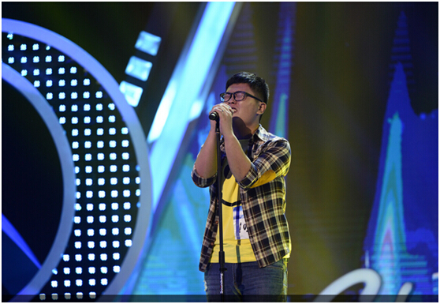

动漫迷福音！川田麻美、黑崎真音、KOTOKO将亮相魔都！
|
当煤矿工人变身音乐人
《梦之声》5sing 推送音乐人马君哲感动全场

5sing特别推送选手：马君哲
10月19日晚，东方卫视《中国梦之声》的终极试音会——上海站试音会圆满落幕，而这一站也给观众们留下了深刻的印象，实力唱将层出不穷，既有《台湾超级星光大道》的前冠军重出江湖，也有曾获过金马奖最佳男配角的影帝级学员转战歌坛，励志美女、小鲜肉们更是“你方唱罢我登场”，个个实力不凡。而5sing中国原创音乐基地特别推送音乐人——马君哲，现场的动情演唱打动了各位导师和现场的观众，获得了晋级。这位来自河南的煤矿工人用他最真挚的方式让我们感受到平凡人对到音乐梦想的追求，导师任贤齐直接点评“英雄不怕出身太单薄”。 煤矿工人献歌妻子感动全场 韩红承诺赛后带学员去矿上演出 马君哲首先唱了一首《一生守候》送给妻子，随后又应韩红老师的要求，演唱了一首《一无所有》。两首歌曲风格不同，但都能听出马君哲是用内心在唱歌。导师韩红连连称赞他艺术感觉好，也不忘调侃：“你的嗓子是在井下喊救命喊来的吧。”马君哲表示来这个舞台就是想拼尽全力给媳妇儿和儿子一个好的生活：“我不太会说话，不会说甜言蜜语，甚至一句谢谢都没对我老婆说过。她跟着我遭了很多罪，吃了很多苦。在我最一无所有的时候她嫁给了我，当时的结婚戒指也是5块钱一对的地摊货。所以我要告诉她，我爱她！” 马君哲的妻子也来到了现场，在被徐若瑄问及这个男人值不值得托付一生时，她坚定地回答“很值得”，并且告诉导师：“我老公是个特别坦诚和真诚的人。当时我家人不同意，因为老公为了给他父亲看病，把房子卖了，还欠了10多万的外债。老公对我说，‘别嫁给我了，因为跟着我你要承担很多很多的压力，吃很多很多的苦。’我想了一夜，还是决定和他在一起。”此时的韩红已经忍不住多次落泪，她承诺比赛结束后会带着《梦之声》学员到矿上演出，慰问那些辛苦的矿工：“马君哲，我从你身上看到了矿工坚韧不拔的劲儿和魂魄，你给中国成千上万的矿工做出了表率。向矿工致敬！你也代表了像我一样的穷苦孩子闯天下，是条汉子！” 《中国梦之声》第二季的试音会阶段已告一段落，五场试音会总共决出65强，而这65名学员将于10月26日晚的节目中进行全新的组合搭配，迎来更为华丽却也更为“艰险”的“组合之夜”。我们期待马君哲后面更加精彩的表现。 |